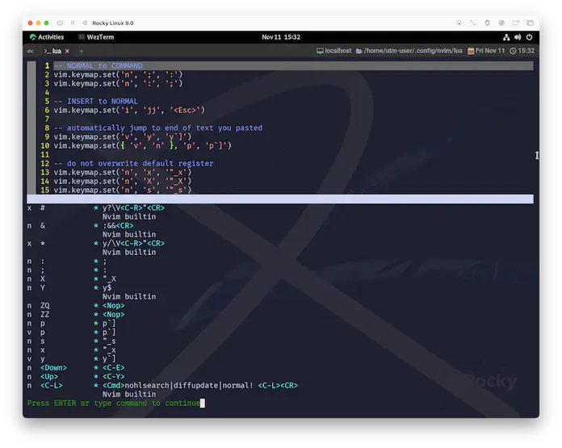

Key Binding
この章ではキーバインドに触れていきます。
基本的には、やり方というか、テンプレートというか、そういうことだけ書いているつもりです😉
ある程度は実用性のある例を提示しようとすると、どうしても自分で使ってる設定が出てきちゃうんですが、 中身はそんなに気にしないでもらえればいいかなーと思ってます。
こんなの、ほんと個人の感覚に依るんで❗
ってことで、まずはやっぱりいつも通りですが、
luaディレクトリにkeybinds.luaとかなんとかでファイルを作成しておきましょう。
で、もちろんinit.luaから読み込むように以下を追記します。
変わり映えのしないルーティンですが、これが基本なので...。
まあ、のんびりいこーよ☺️
keymap.set()
set({mode}, {lhs}, {rhs}, {opts}) vim.keymap.set()
Add a new |mapping|. Examples:
新しい|mapping|を追加します。
Parameters:
• {mode} string|table Same mode short names as |nvim_set_keymap()|. Can
also be list of modes to create mapping on multiple modes.
|nvim_set_keymap()| と同じモードのショートネーム。
複数のモードに対してマッピングを作成するために、モードのリストを指定することもできる。
• {lhs} (string) Left-hand side |{lhs}| of the mapping.
マッピングの左辺|{lhs}|。
• {rhs} string|function Right-hand side |{rhs}| of the mapping. Can
also be a Lua function.
マッピングの右辺|{rhs}|。Luaの関数でも可。
• {opts} (table|nil) A table of |:map-arguments|.
• Accepts options accepted by the {opts} parameter in
|nvim_set_keymap()|, with the following notable differences:
• replace_keycodes: Defaults to `true` if "expr" is `true`.
• noremap: Always overridden with the inverse of "remap" (see below).
• In addition to those options, the table accepts the
following keys:
• buffer: (number or boolean) Add a mapping to the given
buffer. When `0` or `true`, use the current buffer.
• remap: (boolean) Make the mapping recursive. This is the
inverse of the "noremap" option from |nvim_set_keymap()|.
Defaults to `false`.
• |nvim_set_keymap()| の {opts} パラメータで受け付けられるオプションを受け付けるが、以下の顕著な違いがある。
• replace_keycodes: replace_keycodes: "expr" が `true` の場合、デフォルトは `true` 。
• noremap: noremap: "remap "の逆で常にオーバーライドされる(下記参照)。
• これらのオプションに加え、テーブルでは以下のキーを受け付ける。
• buffer: (number or boolean) 与えられたバッファにマッピングを追加する。
'0` または `true` の場合、現在のバッファを使用する。
• remap: (boolean) マッピングを再帰的に行う。これは |nvim_set_keymap()| の "noremap" オプションの逆バージョンである。
デフォルトは `false` 。
See also:
|nvim_set_keymap()|
{mode}のshort namesはこっち。
Parameters:
• {mode} Mode short-name (map command prefix: "n", "i", "v", "x", …) or
"!" for |:map!|, or empty string for |:map|.
Neovim Discourseの会話を盗み見た🤫感じだと、
vim.keymap.set()はvim.api.nvim_set_keymap()のSyntactic sugar1だと思われます。
ここまでひたすらvim.apiを使用してきたので、vim.api.nvim_set_keymap()を使用する方が統一感は出そうなんですが、記述が難しくなってしまうのは避けたい...。
...と、言うわけでvim.keymap.set()を使って行くことにします😉
Customize
実際に動かしてみましょう☺️
この先に出てくる、<Up>とか<C-…>だったりの表記が、どのキーを指しているのか❓などの一覧はkey-notationとして説明されています。
key-notation key-codes keycodes
These names for keys are used in the documentation.
They can also be used with the ":map" command.
これらのキーの名前は、ドキュメントで使用されている。
これらは ":map" コマンドで使用することもできます。
割り当て
これを記述してから再起動すると、方向キーの上下でスクロールするようになっているはずです。 (適当に2行以上入力してから試してください。)
上のコードが何をしているかと言うと、
ノーマルモードの時に, <上>キーが入力されたら, <Ctrl+y>キーの操作として受け付けるぞぉ❗
ノーマルモードの時に, <下>キーが入力されたら, <Ctrl+e>キーの操作として受け付けるぞぉ❗
ってことですね。
「キー操作に機能を割り当てる」と言うよりは、「キー操作にリンク先のキーを割り当てる 」というニュアンスかもしれません。
ここでは一度、実際に動くことを確認してもらいたかったのでkeybinds.luaのサンプルとして提示しましたが、
「こんな感じね〜」を掴めたら削除してもらって構いません。
この後は雰囲気だけ味わってもらえればいいかな〜、ぐらいで流します。軽〜く眺めてください😌
入れ替え
「相互に操作を入れ替える」みたいなパターンも、たったこれだけ😸
vim.keymap.set('n', ';', ':')
vim.keymap.set('n', ':', ';')
:は説明が長くなるので省略してしまうんですが、;でコマンドモードに入れるようになります。
無効化
無効化するパターンもあります。
vim.keymap.set('n', 'ZZ', '<NOP>')
vim.keymap.set('n', 'ZQ', '<NOP>')
<NOP>についてはヘルプに記載されていましたね。
ZZは保存してウィンドウを閉じる、ZQは保存しないで終了、...というのがデフォルトの動作ですが、これをそれぞれ無効化しています。
いや、なんか...、ノーマルモードから終了なんて、急すぎて怖くないですか...😱
モード
ここまでは全てノーマルモードでの例でしたが、もちろん他のモードでのカスタマイズもできます。
vim.keymap.set('i', 'jj', '<Esc>')
これを入れると、jjと連打するだけでインサートモードから抜けられるようになります。
...自分は使っておいてアレですが、使わないで済むならそれに越したことはないと思ってる設定です。
わたし自身はデフォルトで割り当てられている<Ctrl>[への脱却を試みてるんですが、だいぶ苦労してます...😅
{mode}(第一パラメータ)をもう少し詳しく見ると、こんな感じです。
map-table
Mode | Norm | Ins | Cmd | Vis | Sel | Opr | Term | Lang |
Command +------+-----+-----+-----+-----+-----+------+------+
[nore]map | yes | - | - | yes | yes | yes | - | - |
n[nore]map | yes | - | - | - | - | - | - | - |
[nore]map! | - | yes | yes | - | - | - | - | - |
i[nore]map | - | yes | - | - | - | - | - | - |
c[nore]map | - | - | yes | - | - | - | - | - |
v[nore]map | - | - | - | yes | yes | - | - | - |
x[nore]map | - | - | - | yes | - | - | - | - |
s[nore]map | - | - | - | - | yes | - | - | - |
o[nore]map | - | - | - | - | - | yes | - | - |
t[nore]map | - | - | - | - | - | - | yes | - |
l[nore]map | - | yes | yes | - | - | - | - | yes |
Vimscript準拠の表記になっていますが、先頭文字がそれぞれvim.keymap.setの{mode}に対応しています。
冒頭の例で言うと、'i'はインサートモードを指しています。
また、複数のモードに対して適用するのであれば以下のようになります。
vim.keymap.set({ 'n', 'v' }, 'p', 'p`]')
{ 'n', 'v' }はノーマルモードとビジュアルモードに適用する、というものになっています。
まとめ
改めて:mapで確認してみると、こんな感じで設定した内容が反映されていることが確認できます。

キーカスタマイズに関しては、Web上で色々な人が実用的なアイデアを公開しているので、色々試してみると良いです☺️
上のスクリーンショットにも入っているんですが、これとかは結構便利です。
vim.keymap.set('n', 'x', '"_x')
vim.keymap.set('n', 'X', '"_X')
vim.keymap.set('n', 's', '"_s')
これらは「1文字消して〜」の操作ですが、こうすると消した文字をレジスタに入れず、純粋に文字を消すだけの動作になります。
...って、ちょっと紹介したい欲が出てしまった🙀
念のために明示しておくんですが、このページに挙げた例もWebなどでわたしが見たアイデアをマネしてます。
実際に誰をマネしているのかがもう分からなくなっているので、ちゃんと参照元を示せない点は、ごめんなさい🥹
「これはわたしが発案してます😆」みたいに見えちゃうのは絶対に望んでないです。
ほんとしつこいようなんですけど、キーマップのカスタマイズは個人の感覚に依るので、根拠らしい根拠も出てこないですよね😅
この章では雰囲気だけ掴めれば、充分です😉
ただ、もう少し進むと「もう嫌❗🙀」ってなるぐらい実用的なキーカスタマイズに触れて行くことになります。
KEYMAP WILL RETURN
キーマップは帰ってくる
Syntactic sugarについては https://ja.wikipedia.org/wiki/糖衣構文 に丸投げします😃